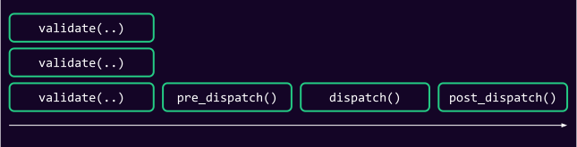

<!DOCTYPE html>
<html lang="en">

<head>
  <meta charset="utf-8" />
  <meta name="viewport" content="width=device-width, initial-scale=1.0, maximum-scale=1.0, user-scalable=no" />

  <title>Frame Miscellaneous</title>
  <link rel="icon" href="./../../../../assets/favicon.svg" />
  <link rel="shortcut icon" href="./../../../../assets/favicon.png" />
  <link rel="stylesheet" href="./../../../../dist/reset.css" />
  <link rel="stylesheet" href="./../../../../dist/reveal.css" />
  <link rel="stylesheet" href="./../../../.././assets/styles/PBA-theme.css" id="theme" />
  <link rel="stylesheet" href="./../../../../css/highlight/shades-of-purple.css" />

  <link rel="stylesheet" href="./../../../.././assets/styles/custom-classes.css" />

</head>

<body class="site">
  <header class="site-header">
    <!-- This logo is a link only on the watching server, not the production build -->
    <a href="">
      
    </a>
  </header>
  <main class="reveal">
    <article class="slides">
      <section  data-markdown><script type="text/template">

# Frame Miscellaneous
</script></section><section  data-markdown><script type="text/template">
## Pre-Dispatch logic

- How is nonce and tip function implemented in polkadot?

<!-- .element: class="fragment" -->

- How do we add more pre-dispatch logic to our runtime?

<!-- .element: class="fragment" -->

<aside class="notes"><ul>
<li>See what is signed in the extrinsic.</li>
<li>Looked at Signed Extension.</li>
</ul>
</aside></script></section><section  data-markdown><script type="text/template">
## Extending pre-dispatch checks


</script></section><section  data-markdown><script type="text/template">
## Signed Extension

- Generic way to **extend** the transaction.
- Similar to middleware.
- Tips and Fees (ChargeTransactionPayment).
- Nonce (CheckNonce).
</script></section><section  data-markdown><script type="text/template">
## Grouping Signed Extension

- Is also a signed extension itself!

- You can look at the implementation yourself.. but the TLDR is:

- Main takeaways:
  - `type AdditionalSigned = (SE1::AdditionalSigned, SE2::AdditionalSigned)`,
  - all of hooks:
    - Executes each individually, combines results

<aside class="notes"><p>TODO: how <code>TransactionValidity</code> is <code>combined_with</code> is super important here, but probably something to cover more in 4.3 and recap here.</p>
</aside></script></section><section  data-markdown><script type="text/template">
## Usage In The Runtime

- Each runtime has a bunch of signed extensions. They can be grouped as a tuple

```rust
pub type SignedExtra = (
	frame_system::CheckNonZeroSender<Runtime>,
	frame_system::CheckSpecVersion<Runtime>,
	frame_system::CheckTxVersion<Runtime>,
	frame_system::CheckGenesis<Runtime>,
	pallet_asset_tx_payment::ChargeAssetTxPayment<Runtime>,
);

type UncheckedExtrinsic = generic::UncheckedExtrinsic<Address, Call, Signature, SignedExtra>;
```

- Signed extensions might originate from a pallet, but are applied to ALL EXTRINSICS 😮‍💨!

<aside class="notes"><p>We will get to this later as well, but recall that SignedExtensions are not a <em>FRAME/Pallet</em>
concept per se. FRAME just implements them. This also implies that everything regarding signed
extensions is applied to <strong>all transactions</strong>, throughout the runtime.</p>
</aside></script></section><section  data-markdown><script type="text/template">
### `ChargeTransactionPayment`

Charge payments, refund if `Pays::Yes`.

```rust
type Pre = (
  // tip
  BalanceOf<T>,
  // who paid the fee - this is an option to allow for a Default impl.
  Self::AccountId,
  // imbalance resulting from withdrawing the fee
  <<T as Config>::OnChargeTransaction as OnChargeTransaction<T>>::LiquidityInfo,
);
```

<!-- .element: class="fragment" -->
</script></section><section  data-markdown><script type="text/template">
## Feeless Signed Extension

- If some condition meets, do not charge any fee.
- Every pallet/extrinsic needs to define a new Signed Extension.
</script></section><section  data-markdown><script type="text/template">
## Feeless Signed Extension

```rust
#[pallet::feeless_if(|origin: &OriginFor<T>, ticket: &Ticket| -> bool {
    let account = ensure_signed(origin.clone())?;
    some_conditions_here(&account, &ticket)
})]
```

- [Issue #1725](https://github.com/paritytech/polkadot-sdk/issues/1725)
</script></section><section  data-markdown><script type="text/template">
## Admin tasks

- You have accumulating rewards, and user needs to claim it.
- Voting period is over, user needs to unfreeze to get back their locked tokens.

<br/>

- Standard means of determining what work can be executed via an off-chain worker or script.

## <!-- .element: class="fragment" -->

## Off-chain worker and pallet::Tasks

```rust [0-7|8-17|18-100]
#[pallet::task]
pub enum Task<T: Config> {
    AddNumberIntoTotal {
        i: u32,
    }
}

/// Some running total.
#[pallet::storage]
pub(super) type Total<T: Config<I>, I: 'static = ()> =
StorageValue<_, (u32, u32), ValueQuery>;

/// Numbers to be added into the total.
#[pallet::storage]
pub(super) type Numbers<T: Config<I>, I: 'static = ()> =
StorageMap<_, Twox64Concat, u32, u32, OptionQuery>;

#[pallet::tasks_experimental]
impl<T: Config<I>, I: 'static> Pallet<T, I> {
	/// Add a pair of numbers into the totals and remove them.
	#[pallet::task_list(Numbers::<T, I>::iter_keys())]
	#[pallet::task_condition(|i| Numbers::<T, I>::contains_key(i))]
	#[pallet::task_index(0)]
	pub fn add_number_into_total(i: u32) -> DispatchResult {
		let v = Numbers::<T, I>::take(i).ok_or(Error::<T, I>::NotFound)?;
		Total::<T, I>::mutate(|(total_keys, total_values)| {
			*total_keys += i;
			*total_values += v;
		});
		Ok(())
	}
}
```

<aside class="notes"><p>PR: <a href="https://github.com/paritytech/polkadot-sdk/pull/1343">https://github.com/paritytech/polkadot-sdk/pull/1343</a></p>
</aside></script></section>
    </article>
  </main>

  <script src="./../../../../dist/reveal.js"></script>

  <script src="./../../../../plugin/markdown/markdown.js"></script>
  <script src="./../../../../plugin/highlight/highlight.js"></script>
  <script src="./../../../../plugin/zoom/zoom.js"></script>
  <script src="./../../../../plugin/notes/notes.js"></script>
  <script src="./../../../../plugin/math/math.js"></script>

  <script src="./../../../../assets/plugin/mermaid.js"></script>
  <script src="./../../../../assets/plugin/mermaid-theme.js"></script>

  <script src="./../../../../assets/plugin/chart/chart.js"></script>
  <script src="./../../../../assets/plugin/chart/chart.min.js"></script>

  <script src="./../../../../assets/plugin/tailwindcss.min.js"></script>

  <script>
    function extend() {
      var target = {};
      for (var i = 0; i < arguments.length; i++) {
        var source = arguments[i];
        for (var key in source) {
          if (source.hasOwnProperty(key)) {
            target[key] = source[key];
          }
        }
      }
      return target;
    }

    // default options to init reveal.js
    var defaultOptions = {
      controls: true,
      progress: true,
      history: true,
      center: true,
      transition: 'default', // none/fade/slide/convex/concave/zoom
      slideNumber: true,
      mermaid: {
        startOnLoad: false,
        logLevel: 3,
        theme: 'base',
        themeVariables: {
          primaryColor: purple,
          primaryTextColor: white,
          primaryBorderColor: pink,
          lineColor: pink,
          secondaryColor: lightPurple,
          tertiaryColor: lightPurple,
        },
      },
      chart: {
        defaults: {
          color: 'lightgray', // color of labels
          scale: {
            beginAtZero: true,
            ticks: { stepSize: 1 },
            grid: { color: "lightgray" }, // color of grid lines
          },
        },
        line: { borderColor: ["#ccc", "#E6007A", "#6D3AEE"], "borderDash": [[5, 10], [0, 0]] },
        bar: { backgroundColor: ["#ccc", "#E6007A", "#6D3AEE"] },
      },
      plugins: [
        RevealMarkdown,
        RevealHighlight,
        RevealZoom,
        RevealNotes,
        RevealMath,
        RevealMermaid,
        RevealChart
      ]
    };

    // options from URL query string
    var queryOptions = Reveal().getQueryHash() || {};

    var options = extend(defaultOptions, {"width":1400,"height":900,"margin":0,"minScale":0.2,"maxScale":2,"transition":"none","controls":true,"progress":true,"center":true,"slideNumber":true,"backgroundTransition":"fade"}, queryOptions);
  </script>


  <script>
    Reveal.initialize(options);
  </script>
</body>

</html>
